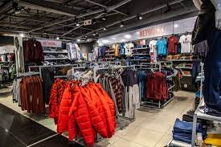
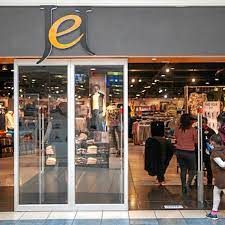

JET
Jet has delivered quality fashion to South African consumers under the Edcon group for the past 90 years. Originally known as Jet Supermarkets in 1965, the Jet brand expanded into various stores around South Africa and transformed into the country’s leading value-for-money clothing retailer.
Presently, Jet has over 600 stores across the country, selling affordable and high-standard clothing and home decor items including dresses, shoes, bedding, curtains, baby products, and beauty products.
Cell phones and other cellular services are also available at all Jet stores. These stores can be located in Cape Town, Durban, Port Elizabeth, Johannesburg, Musina, and East London. Stores are conveniently available in shopping malls in popular locations.
As a result of Jet’s connection with the Edcon group, customers are able to open a credit account and earn Thank U points on each swipe. Accumulated Thank U points can then be spent on any item of the customer’s choosing.
 